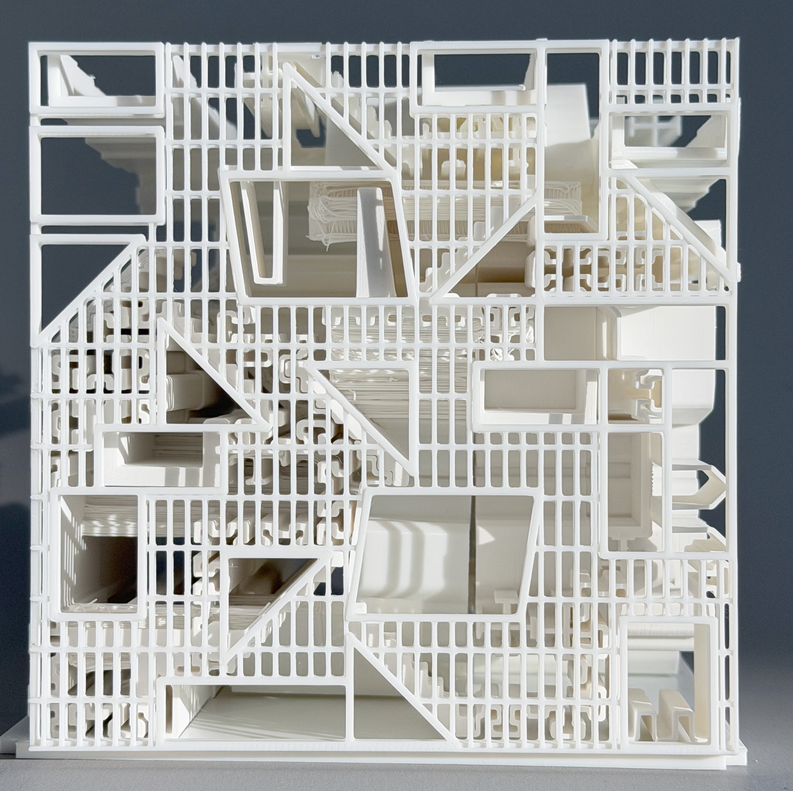
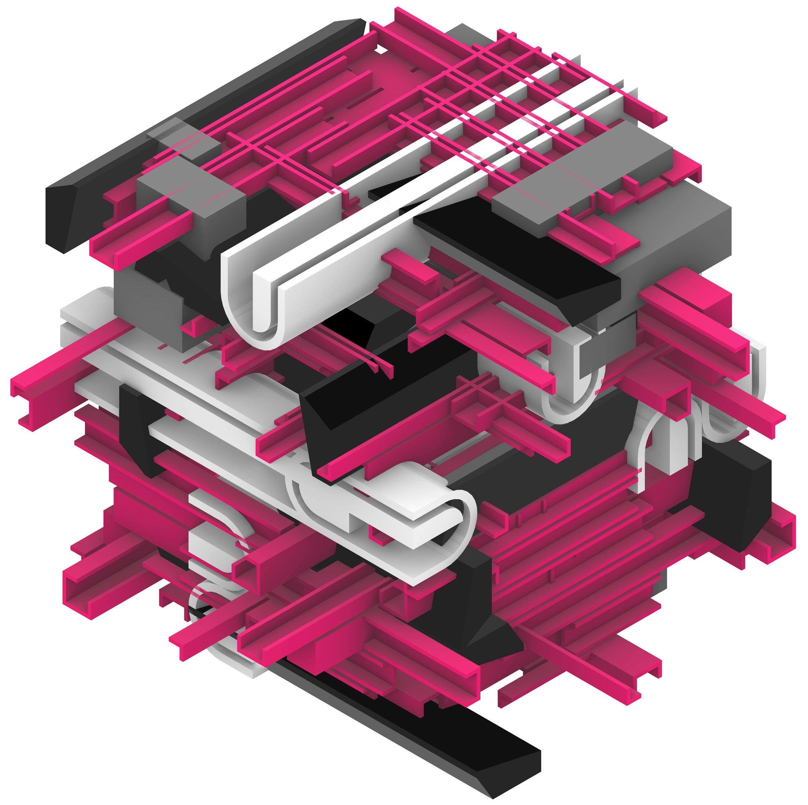
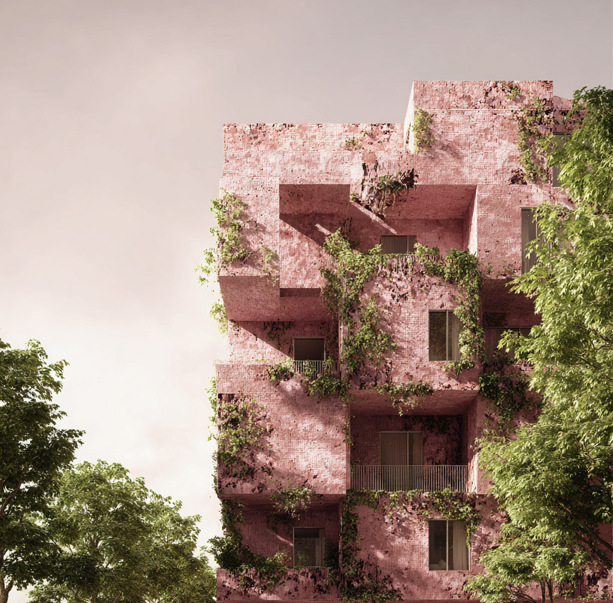
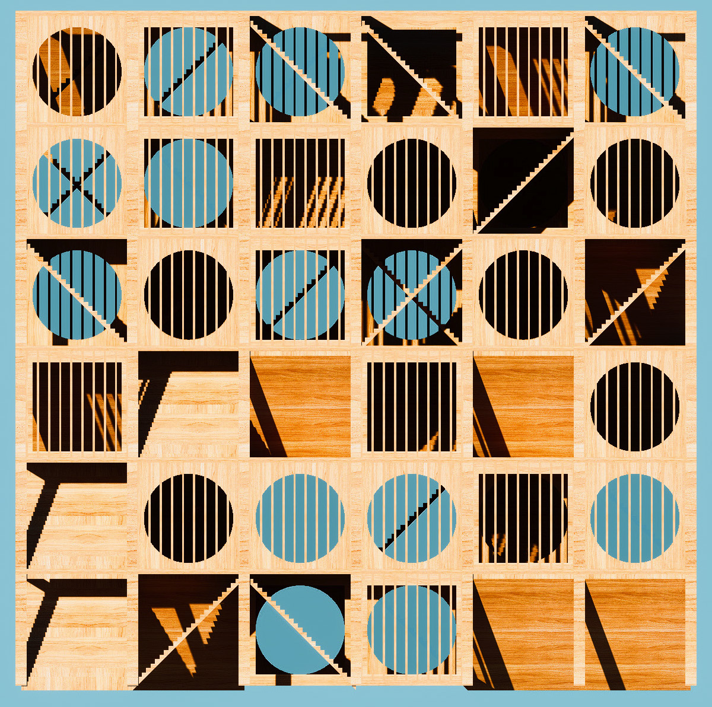
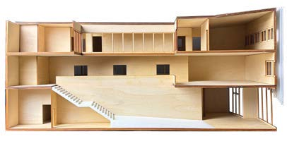
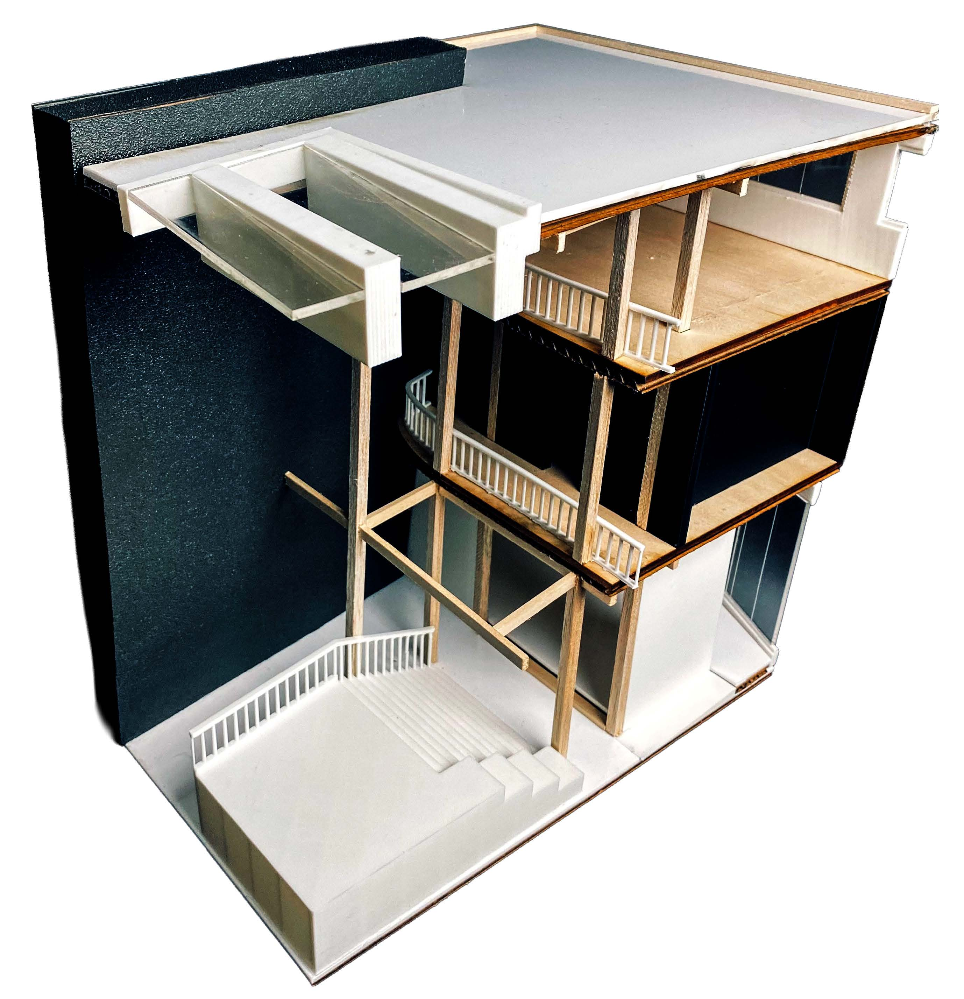
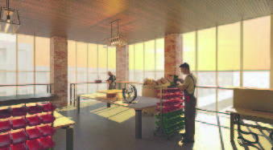
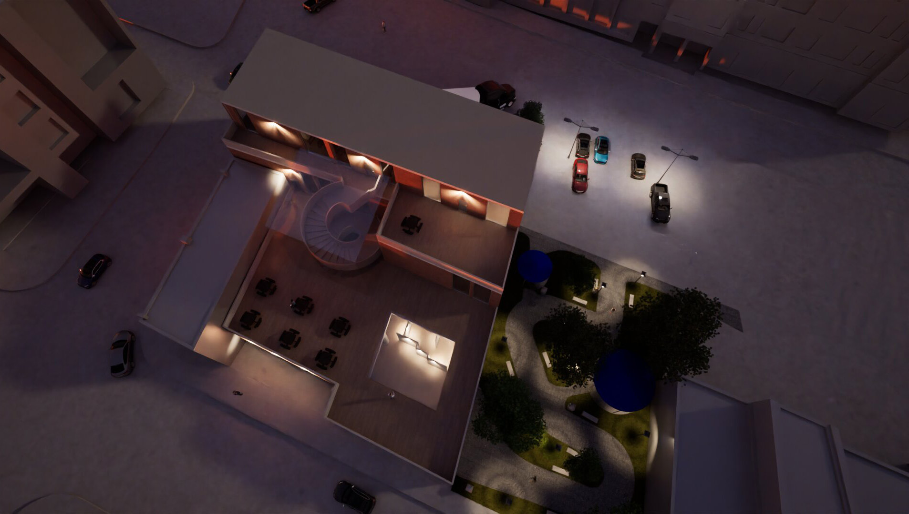

ARCH 6020 / Morphological systems
ARCH 6020 / Spatial aggregation
ARCH 6020 / Generative massing
ARCH 6020 / Rule-based pattern ARCH 6020 / Vertical prototype
ARCH 2017 / Section modelAbout
I study how people search, compare, remember, and make decisions with digital interfaces.
My work combines research, prototyping, and front-end implementation, with a particular interest in educational systems, archival interfaces, and small tools that make complex information easier to inspect. The image grid above is structured as a research index: click a teaching image to open the related project detail. Project text is maintained in Markdown, so the site can grow without rewriting the HTML structure.

ARCH 2017 / Model section
ARCH 2017 / Spatial atmosphereWriting
- Interfaces for Comparative Choice, working note, 2026.
- Small Archives, Long Memory, essay draft, 2025.
- Designing With Incomplete Data, project note, 2025.
 ARCH 2017 / Public interior
ARCH 2017 / Public interior

ARCH 2017 / Night studyCV
- Education
- Add institution, program, advisor, and expected graduation.
- Methods
- Interviews, surveys, comparative analysis, prototyping.
- Tools
- HTML, CSS, JavaScript, Python, Figma, Git, spreadsheets.